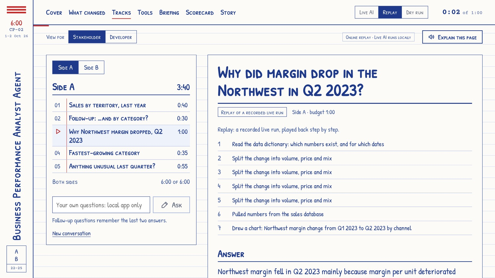
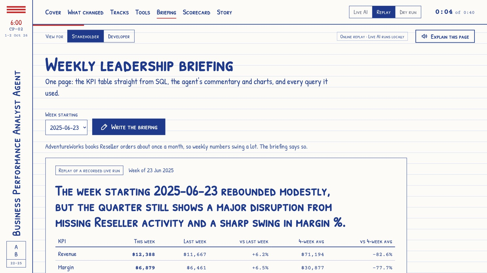
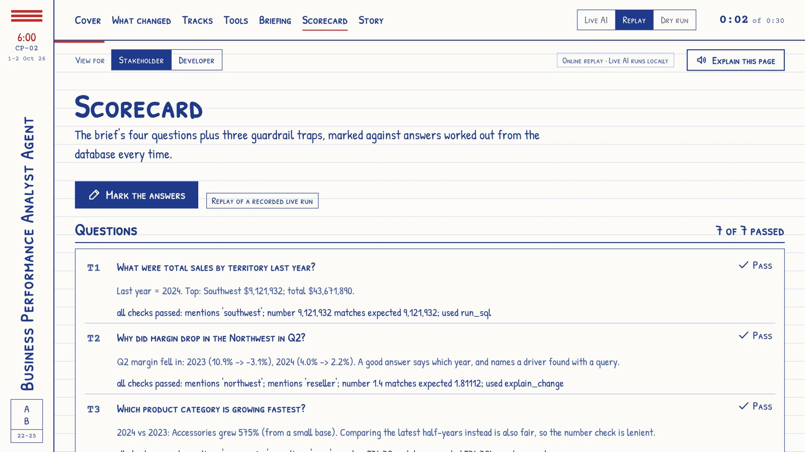

Agentic AI Workshop 2026 · Capstone Project 2 of 5
Business
Performance
Analyst Agent
Ask the numbers a question in plain English. Get the answer, the chart and the reason why.

CP‑02 · 6:00
1–2 October 2026
CP‑02 · Business Performance Analyst Agent
02
The problem
“How did we do last month?”
“Which products are losing margin?”
Days in a queue
Simple questions wait for an analyst to be free.
A spreadsheet back
The answer arrives needing its own explanation.
Repeat reporting
Analysts spend their week on it instead of deeper work.
CP‑02 · Business Performance Analyst Agent
03
What the agent does
01
Map the question
to the right tables and metrics: revenue, margin, volume, cost
02
Write and run SQL or pandas
and fix its own errors from the hint each tool returns
03
Draw the right chart
bar, line or breakdown, chosen to suit the question
04
Explain what drove it
volume, price, mix, channel and category, before giving a reason
05
Flag anomalies
months or segments well off their own recent trend
06
Show its working
the exact queries, taken from the tool log
CP‑02 · Business Performance Analyst Agent
04
How it works
1
Plain-English question
2
Plan the analysis
3
Write query or code
4
Run and self-correct
5
Chart and explanation
6
Weekly briefing
Same engine, real data
We kept the course notebook’s agent loop and pointed it at Microsoft’s AdventureWorks sample: 31,465 orders, May 2022 to June 2025, ten territories.
Keeps going
When Groq’s free daily allowance runs out, it switches to OpenAI automatically. Shorter prompts cut the cost per round by 32%.
CP‑02 · Business Performance Analyst Agent
05
Five tools, plus one
| Tool | Purpose | What we added |
|---|---|---|
| get_schema() | Tables, columns, data dictionary | Also lists what the data does not have |
| run_sql(query) | Read-only query execution | One SELECT at a time; file opened read-only |
| run_python(code) | pandas analysis in a sandbox | No imports, files or system; 10-second limit |
| make_chart(data, type) | Bar, line or breakdown chart | Drawn from any query result |
| detect_anomalies(metric) | Flags values off trend | 7 metrics, by territory, category, channel |
| explain_change(…) | Stretch: volume, price, mix | Three parts that always add up |
CP‑02 · Business Performance Analyst Agent
06
Built to be trusted
Read-only database
The file is opened read-only, and only SELECT is allowed. “Delete the orders” is refused.
Always show the query
The queries under each answer come from the tool log, never from the AI’s own words.
Say when the data can’t answer
Returns, competitor prices, satisfaction: not in the data, so it says so. No stand-ins.
Never a forecast as fact
It shows the past trend. Any projection is labelled “ESTIMATE, not a fact”.
CP‑02 · Business Performance Analyst Agent
07
Why did Northwest margin drop in Q2 2023?

−$150,905
Margin went from $110,755 in Q1 to −$40,151 in Q2.
- Margin per unit: −$256,848
- Higher volume: +$240,225
- Reseller channel: −$174,193
- Mountain Bikes: −$166,669
Every figure has its query underneath.
CP‑02 · Business Performance Analyst Agent
08
The planted anomaly, found
−$96,403
Northwest margin, May 2024
We planted a 25% bike discount in a copy of the data, then asked a leadership question that leads to it.
The agent traced the loss to the reseller discount, which jumped from 0.02% to 21.69%.
A rehearsal on a separate copy of the database. The real data is never changed.
CP‑02 · Business Performance Analyst Agent
09
The weekly leadership briefing

KPIs straight from SQL
So the AI can’t mistype a number.
AI writes the story
Commentary and charts on what moved.
One page
With every query it used listed.
CP‑02 · Business Performance Analyst Agent
10
Scorecard

7 / 7
The brief’s four questions plus three guardrail traps, marked against answers worked out from the database.
It was 6 of 7 until we fixed how it answered “return rate”. Plus 27 automatic checks that need no AI key.
CP‑02 · Business Performance Analyst Agent
11
What we learned
01
Keep the engine, change the inputs
We added a new section instead of rewriting, so nothing that worked broke.
02
Never trust a model with numbers it can look up
KPI tables and query lists come from code and the tool log.
03
Measure the tokens
On a free plan, the fixed text sent every round is the real cost.
04
Plan for a live demo to fail
Labelled replays of real runs kept the demo going.
05
Check against the brief, not just the tests
Reading it line by line found three gaps the tests missed.
Thank you. Questions?
Try the online replay, or run Live AI locally with your own key:
A course demonstration. AdventureWorks is Microsoft’s public sample of a made-up bicycle company; no real business data is used.